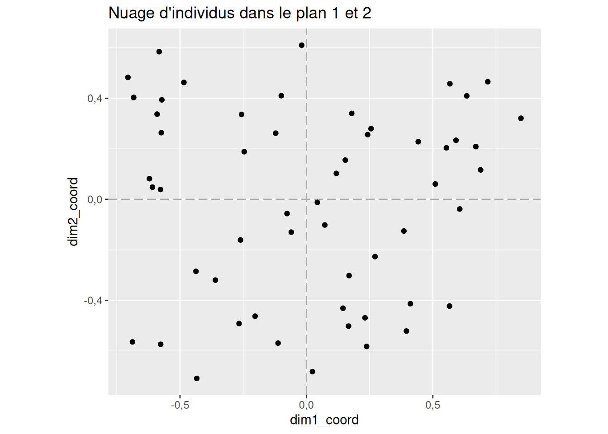
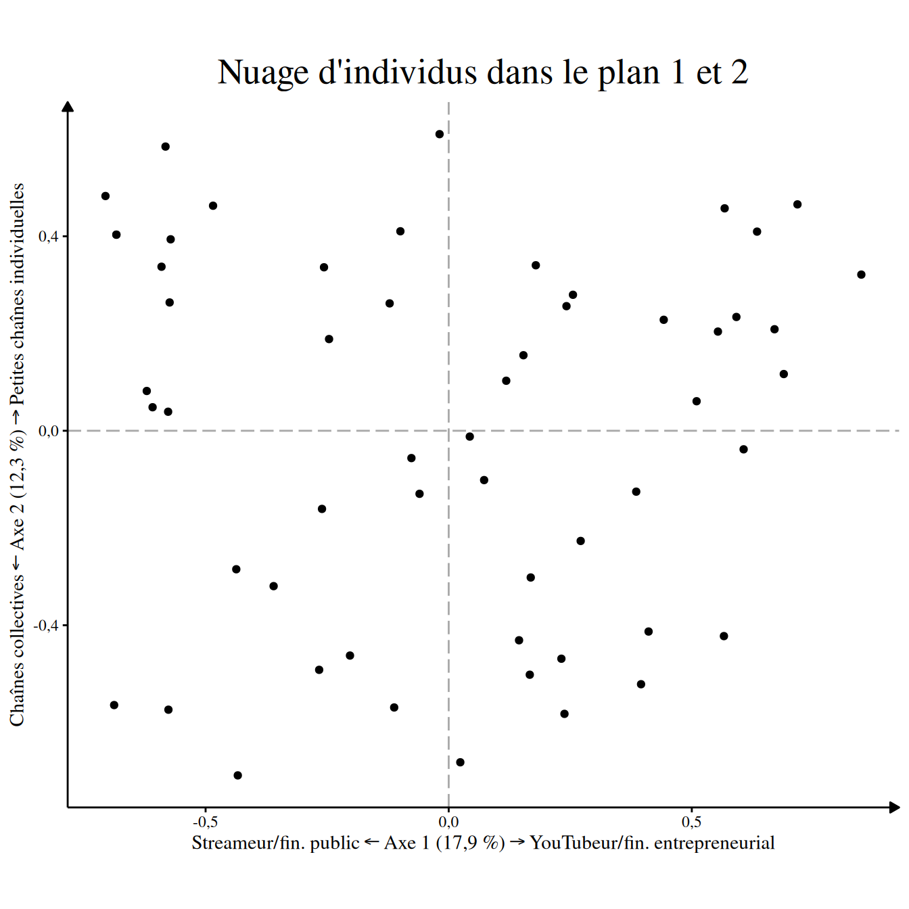
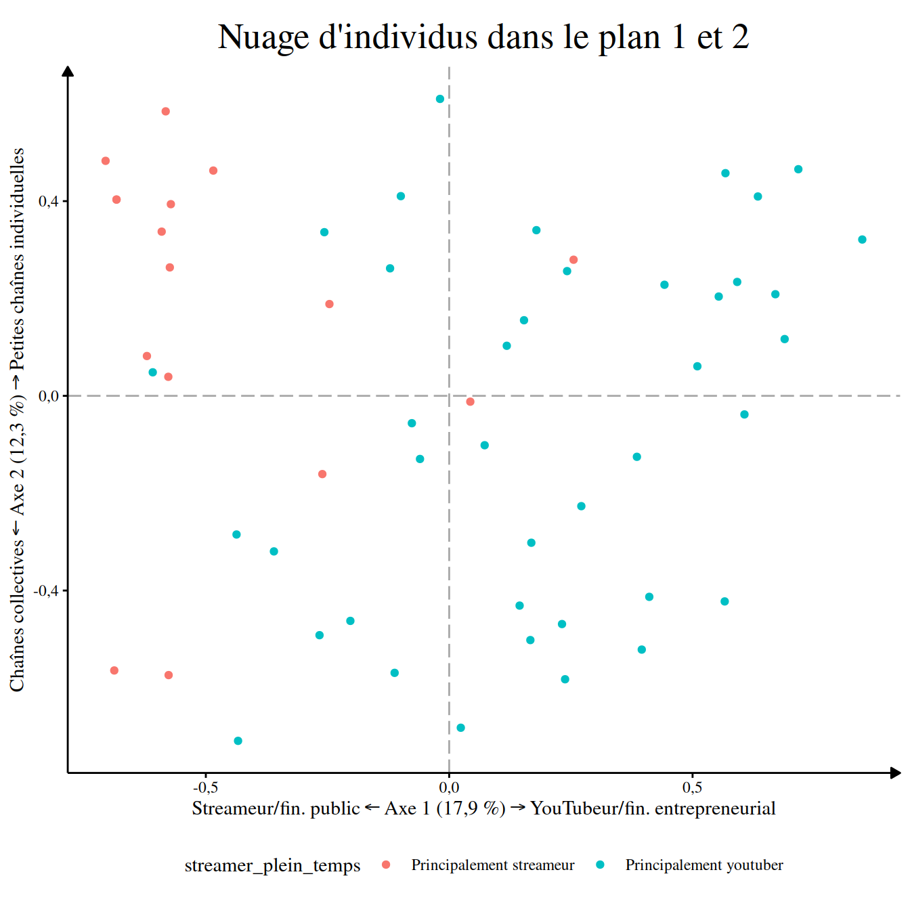

Cette page propose de vous montrer très rapidement comment utiliser le pacage tout en vous orientant vers les pages correspondantes.
Si vous êtes chercheurs en sciences sociales, je vous recommande grandement d’utiliser ce package au sein d’un document Quarto pour permettre de générer un document qui compilera tous vos résultats. Ce type de document permet de faire apparaître du code et son résultat côte-côte, il vous évitera de devoir faire copier-coller et générera à chaque fois que vous le lancerez vos tableaux. Pour vous familiarisez rapidement avec ce type de document vous pouvez consulter cette page de E. Morand et B. Garnier.
Concrètement vous allez commencez par charger le package ainsi que les packages du tidyverse et ceux de gtsummary qui seront particulièrement utiles pour la suite :
Ensuite on mets à jour certaines options pour que les tableaux en sorties nous conviennent avec mise_en_place() :
mise_en_place_ACM()
#>
#> ── Les options générales de la session R ont été modifié.
#> ✔ Les nombres décimaux s'afficheront avec une virgule.
#>
#>
#> ── Le thème des tableaux produit par gtsummary a été modifié.
#>
#> ✔ Ils s'afficheront en français.
#> ✔ En utilisant une virgule pour les nombres décimaux.Puis vous chargerez vos données dans un objet avec un code qui ressemble à cela :
createurs_de_contenus_pol <- readr::read_csv2("createurs_de_contenus_politiques.csv")Pour plus de détails sur la marche à suivre et comment trouver comment importer vos données, je vous renvoie vers la page dédié du guide de Julien Barnier.
Sur cette page, j’utilise la base de données utilisées dans mon mémoire qui vient avec le package et qui se nomme createurs_de_contenus_pol, pour une description des variables, vous pouvez taper ?createurs_de_contenus_pol dans la console.
createurs_de_contenus_pol
#> # A tibble: 56 × 24
#> personne titre orientation orientation2 debut visage_decouvert abonnes genre
#> <chr> <chr> <fct> <fct> <fct> <fct> <fct> <fct>
#> 1 Antoine … Anto… De gauche Progressiste 2015… Montre son visa… Entre … Homme
#> 2 Salomé S… BLAS… De gauche Progressiste 2020… Montre son visa… Plus d… Femme
#> 3 Benjamin… Bolc… De gauche Progressiste 2014… Montre son visa… Entre … Homme
#> 4 Aymric D… Cana… De gauche Progressiste 2015… Montre son visa… Entre … Homme
#> 5 Cassandr… Cass… De gauche Progressiste 2020… Montre son visa… 50k ab… Homme
#> 6 Pierre-Y… Cerc… De droite Conservateur 2015… Montre son visa… Entre … Homme
#> 7 Christop… Chri… De droite Conservateur 2014… Montre son visa… Entre … Homme
#> 8 Clément … Clém… De gauche Progressiste 2020… Montre son visa… Entre … Homme
#> 9 Charléli… DANY… De gauche Progressiste 2020… Montre son visa… Entre … Homme
#> 10 Julien G… Data… De gauche Progressiste 2014… Ne montre pas s… Entre … Homme
#> # ℹ 46 more rows
#> # ℹ 16 more variables: age <fct>, streamer_plein_temps <fct>, collectif <fct>,
#> # livre <fct>, podcast <fct>, twitter <fct>, facebook <fct>, instagram <fct>,
#> # tiktok <fct>, discord <fct>, twitch <fct>, site_perso <fct>, CNC <fct>,
#> # soutenir <fct>, partenariat_entreprise <fct>, autres_services <fct>Une fois que cela est fait, je peux réaliser l’ACM en précisant les variables supplémentaires.
resultat_acm <- createurs_de_contenus_pol |>
ACM(variables_supplementaires = c(titre,
personne,
orientation,
orientation2,
debut,
twitter,
genre,
age,
visage_decouvert))
#> ℹ Réalisation de l'ACM avec `FactoMineR::MCA()`
#> ✔ L'ACM a été réalisé avec succès avec `FactoMineR::MCA()` [43ms]
#>
#> ℹ
#> • Sur 56 individus...
#> ℹ
• et 24 variables.
#> ℹ
#> ℹ
── Variables actives : 15
#> ℹ
`abonnes`, `streamer_plein_temps`, `collectif`, `livre`, `podcast`, `facebook`,
#> `instagram`, `tiktok`, `discord`, `twitch`, `site_perso`, `CNC`, `soutenir`,
#> `partenariat_entreprise`, and `autres_services`.
#> ℹ
── Variables supplémentaires : 9
#> ℹ
`titre`, `personne`, `orientation`, `orientation2`, `debut`, `twitter`,
#> `genre`, `age`, and `visage_decouvert`.[47ms]Une fois que cela est fait, on peut extraire un premier nuage de points pour s’assurer qu’il a une forme adaptée
nuage_individus(resultat_acm)
On peut ensuite consulter la variance capturée de chaque axe :
extraire_variance(resultat_acm)
#> Axes Valeurs propres % de variance % cumulé de variance
#> 1 Axe 1 0,20 17,9 % 17,9 %
#> 2 Axe 2 0,14 12,3 % 30,3 %
#> 3 Axe 3 0,12 10,8 % 41,1 %
#> 4 Axe 4 0,09 8,3 % 49,4 %
#> 5 Axe 5 0,08 7,4 % 56,7 %Puis caractériser chaque axes. Pour l’axe 1 par exemple :
resultat_acm |>
caracteriser_axe(axe = 1, contribution_minimum = 4)| Modalité1 | Contribution | Coordonnée2 | Cos² | V-test | Effectif |
|---|---|---|---|---|---|
| Coordonnées positives | |||||
| Vend ses produits | 10,1 % | 1,074 | 0,422 | 4,82 | 15 (27 %) |
| Sponsorisé.e par des entreprises | 6,7 % | 0,872 | 0,278 | 3,91 | 15 (27 %) |
| Site personnel | 6,4 % | 0,662 | 0,353 | 4,41 | 25 (45 %) |
| Pas de compte Twitch | 5,4 % | 0,650 | 0,273 | 3,87 | 22 (39 %) |
| Principalement youtuber | 4,1 % | 0,418 | 0,438 | 4,91 | 40 (71 %) |
| Coordonnées négatives | |||||
| Principalement streameur | 10,2 % | -1,046 | 0,438 | -4,91 | 16 (29 %) |
| 50k abonnés ou moins | 9,5 % | -1,042 | 0,397 | -4,67 | 15 (27 %) |
| Pas de site personnel | 5,2 % | -0,534 | 0,353 | -4,41 | 31 (55 %) |
| Subvention du CNC | 4,3 % | -0,720 | 0,173 | -3,08 | 14 (25 %) |
| 1 Seules les modalités actives dont la contribution est supérieure à 4 % sont représentées. | |||||
| 2 Moyenne des coordonnées des individus partageant la modalité | |||||
Et pour l’axe 2 :
resultat_acm |>
caracteriser_axe(axe = 2, contribution_minimum = 4)| Modalité1 | Contribution | Coordonnée2 | Cos² | V-test | Effectif |
|---|---|---|---|---|---|
| Coordonnées positives | |||||
| Chaîne individuelle | 9,6 % | 0,537 | 0,661 | 6,03 | 39 (70 %) |
| 50k abonnés ou moins | 7,5 % | 0,766 | 0,215 | 3,44 | 15 (27 %) |
| Vend ses produits | 6,7 % | 0,725 | 0,192 | 3,25 | 15 (27 %) |
| Ne demande pas de financement à l'audience | 5,5 % | 0,703 | 0,149 | 2,87 | 13 (23 %) |
| Pas de compte Instagram | 4,5 % | 0,768 | 0,113 | 2,49 | 9 (16 %) |
| Pas de subvention du CNC | 4,3 % | 0,345 | 0,357 | 4,43 | 42 (75 %) |
| Coordonnées négatives | |||||
| Chaîne collective | 21,9 % | -1,231 | 0,661 | -6,03 | 17 (30 %) |
| Subvention du CNC | 12,8 % | -1,035 | 0,357 | -4,43 | 14 (25 %) |
| 1 Seules les modalités actives dont la contribution est supérieure à 4 % sont représentées. | |||||
| 2 Moyenne des coordonnées des individus partageant la modalité | |||||
Le premier axe semble séparer les créateurs qui se financent de manière entrepreneuriale et qui produisent sur YouTube et de l’autre les streameurs qui se reposent sur des subventions publiques (et les dons de la communauté qui ne sont pas codé dans cette base). Le deuxième axe lui semble, concerner une opposition entre des petites chaînes individuelles et des chaînes collectives un peu plus grosses.
On peut donc reproduire le nuage des individus :
label_axes <- nommer_axes(
resultat_acm,
a_gauche = "Streameur/fin. public",
a_droite = "YouTubeur/fin. entrepreneurial",
en_haut = "Petites chaînes individuelles",
en_bas = "Chaînes collectives"
)
theme_set(theme_acm())
nuage_individus(resultat_acm) +
label_axes
On peut vérifier qu’on trouve les streameurs à gauche et les youtubeurs à droite en colorant ce graphique :
nuage_individus(resultat_acm, couleur = streamer_plein_temps) +
label_axes